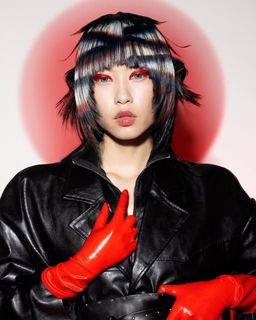
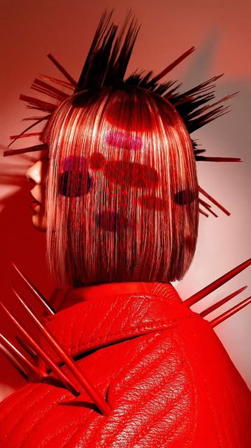
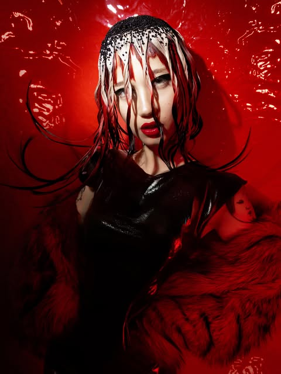
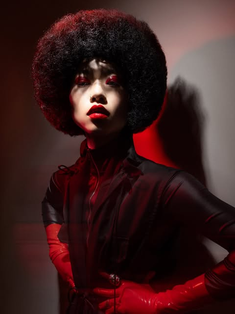
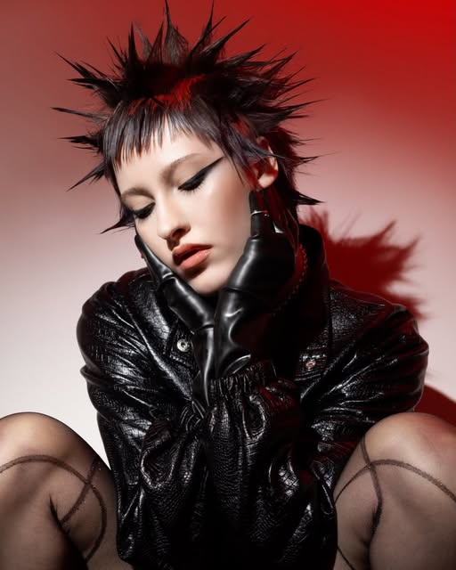
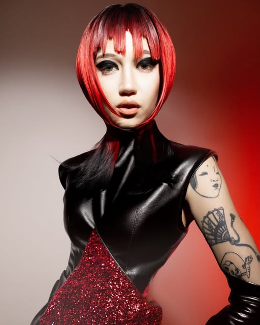
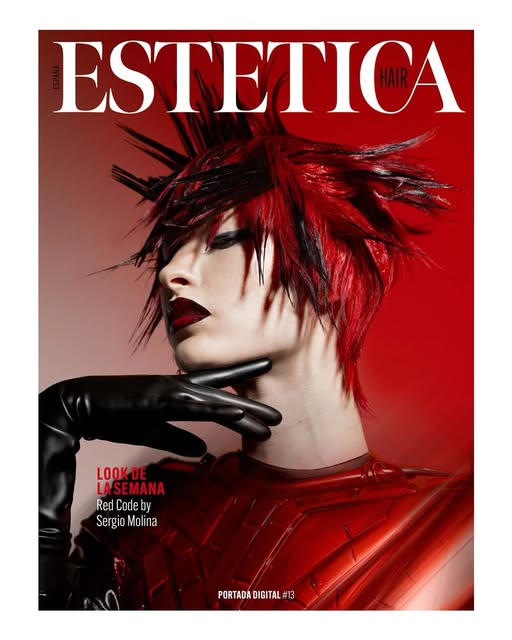

Blonds
Rubios y mechas con diagnóstico y cuidado de la fibra. Y si otra peluquería lo estropeó, aquí se arregla.

Nº 01 · Blanes · Peluquería de autor
Sumario
Editorial · En Blanes, en la calle Sant Jaume, hay un salón que trata el pelo como materia creativa. Cortes, color y rubios con formación constante y colecciones propias que han llegado a portada. Esto es S SALON.
p. 04 · Colección





«Peluquería de autor: el pelo como lenguaje propio.»

p. 12 · Portada
Las colecciones propias del salón se crean para competir y para inspirar: han llegado a la portada de ESTETICA y a los premios AIPP y Visionary Awards. Lo que se aprende en cada colección vuelve al sillón, en forma de cortes, color y rubios con técnica.
— Redacción
p. 18 · Curly
Método curly para cortar, definir e hidratar el rizo respetando su forma natural. «Nadie como Sergio sabe tratar mis rizos tan bien. Hace muchos años que confío en ellos.»
— Marta L., lectora
p. 24 · Servicios
Rubios y mechas con diagnóstico y cuidado de la fibra. Y si otra peluquería lo estropeó, aquí se arregla.
Cortes y color con asesoramiento profesional. Entras con una idea, sales con tu mejor versión.
Novias e invitadas: peinados de autor que aguantan de la ceremonia al último baile.
Cortes masculinos precisos, con la misma exigencia que una colección.
El equipo se forma cada temporada. Por eso los premios.
p. 30 · Cartas de las lectoras
«Vicky es la mejor peluquera que he tenido en años. Cuida muchísimo los detalles: mis mechas han quedado increíbles y arregló el desastre que me hizo otra peluquera.»Patricia P.
«Si estás buscando por Blanes para cortarte el pelo, cambio de look o color, no dudes en ir al salón de Sergio. Desde que entras hasta que sales te sientes súper bien y en paz.»Sara
«Muy contento con el trato recibido y con el nuevo corte de pelo que me hicieron.»Lector
«Me ha gustado mucho la profesionalidad y cómo han tratado mi cabello.»Lectora
S SALON
Dirección
Carrer de Sant Jaume, 6
17300 Blanes
Horario
Mar – jue 9:30 – 18:00
Viernes 9:30 – 19:00
Sábado 9:30 – 15:00
Reservas
Nº 01 · Todos los peinados de esta revista son trabajo real del salón.